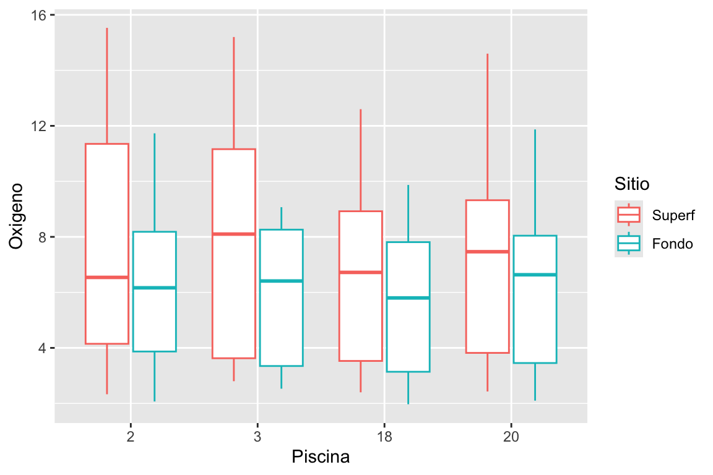

Universidad de Córdoba, Montería
18/03/2026
acuicultura.csv
OXIGESUP y OXIGEFON contienen medidas del oxígeno disuelto en la superficie y en el fondo de las piscinas, respectivamente. Escriba el código que permita realizar el siguiente gráfico, donde se comparan las distribuciones de oxígeno en superficie y fondo para cada piscina.
acuicultura=read.csv2("data/acuicultura.csv")
# seleccionamos las columnas
oxigeno=subset(acuicultura, select=c('PISCINA','dia','OXIGESUP','OXIGEFON'))
oxigenol=melt(oxigeno,id.vars=c("PISCINA","dia"))
# cambiamos los nombres de columnas
colnames(oxigenol)=c('Piscina','dia','Sitio','Oxigeno')
# convertimos sitio en un factor
oxigenol$Sitio=factor(oxigenol$Sitio,labels = c('Superf','Fondo'))
#head(oxigenol)
# piscina en un factor
oxigenol$Piscina=factor(oxigenol$Piscina)
#head(oxigenol)La visualización es una herramienta importante para generar información
Es raro obtener los datos exactamente en el formato correcto que necesita para crear el gráfico que desea.
Necesitarás crear algunas nuevas variables o resúmenes para responder tus preguntas con tus datos
Tal vez solo quieras cambiar el nombre de las variables o reordenar las observaciones para que sea un poco más fácil trabajar con los datos.
Aprenderemos cómo hacer la transformación de datos utilizando el paquete dplyr
nycflights13 y usaremos ggplot2 para ayudarnos a comprender los datos.Para explorar los conceptos básicos de dplyr, usaremos nycflights13::flights.
Este conjunto de datos contiene los 336.776 vuelos que partieron de la ciudad de Nueva York en 2013.
Los datos provienen de la Oficina de Estadísticas de Transporte de EE. UU. y están documentados en ?flights.
tibblesflights es un tibble, un tipo especial de marco de datos utilizado por tidyverse para evitar algunos problemas comunes.
La diferencia más importante entre tibbles y dataframes es la forma en que se imprimen los tibbles
Están diseñados para conjuntos de datos grandes, por lo que muestran solo las primeras filas y solo las columnas que caben en una pantalla.
Hay algunas opciones para verlo todo. Si está utilizando RStudio, lo más conveniente probablemente sea View(flights), que abrirá una vista interactiva, desplazable y filtrable.
De lo contrario, puedes utilizar print(flights, width = Inf) para mostrar todas las columnas o usar glimpse():
flightsRows: 336,776
Columns: 19
$ year <int> 2013, 2013, 2013, 2013, 2013, 2013, 2013, 2013, 2013, 2…
$ month <int> 1, 1, 1, 1, 1, 1, 1, 1, 1, 1, 1, 1, 1, 1, 1, 1, 1, 1, 1…
$ day <int> 1, 1, 1, 1, 1, 1, 1, 1, 1, 1, 1, 1, 1, 1, 1, 1, 1, 1, 1…
$ dep_time <int> 517, 533, 542, 544, 554, 554, 555, 557, 557, 558, 558, …
$ sched_dep_time <int> 515, 529, 540, 545, 600, 558, 600, 600, 600, 600, 600, …
$ dep_delay <dbl> 2, 4, 2, -1, -6, -4, -5, -3, -3, -2, -2, -2, -2, -2, -1…
$ arr_time <int> 830, 850, 923, 1004, 812, 740, 913, 709, 838, 753, 849,…
$ sched_arr_time <int> 819, 830, 850, 1022, 837, 728, 854, 723, 846, 745, 851,…
$ arr_delay <dbl> 11, 20, 33, -18, -25, 12, 19, -14, -8, 8, -2, -3, 7, -1…
$ carrier <chr> "UA", "UA", "AA", "B6", "DL", "UA", "B6", "EV", "B6", "…
$ flight <int> 1545, 1714, 1141, 725, 461, 1696, 507, 5708, 79, 301, 4…
$ tailnum <chr> "N14228", "N24211", "N619AA", "N804JB", "N668DN", "N394…
$ origin <chr> "EWR", "LGA", "JFK", "JFK", "LGA", "EWR", "EWR", "LGA",…
$ dest <chr> "IAH", "IAH", "MIA", "BQN", "ATL", "ORD", "FLL", "IAD",…
$ air_time <dbl> 227, 227, 160, 183, 116, 150, 158, 53, 140, 138, 149, 1…
$ distance <dbl> 1400, 1416, 1089, 1576, 762, 719, 1065, 229, 944, 733, …
$ hour <dbl> 5, 5, 5, 5, 6, 5, 6, 6, 6, 6, 6, 6, 6, 6, 6, 5, 6, 6, 6…
$ minute <dbl> 15, 29, 40, 45, 0, 58, 0, 0, 0, 0, 0, 0, 0, 0, 0, 59, 0…
$ time_hour <dttm> 2013-01-01 05:00:00, 2013-01-01 05:00:00, 2013-01-01 0…dplyrdplyrAprenderemos las funciones principales de dplyr, que nos permitirán resolver la gran mayoría de tus desafíos de manipulación de datos.
Antes de analizar sus diferencias individuales, vale la pena señalar lo que tienen en común.
dplyr. El pipe|>, conocido como pipe.pipe# A tibble: 6 × 4
# Groups: year, month [1]
year month day arr_delay
<int> <int> <int> <dbl>
1 2013 1 1 17.8
2 2013 1 2 7
3 2013 1 3 18.3
4 2013 1 4 -3.2
5 2013 1 5 20.2
6 2013 1 6 9.28dplyrdplyr están organizadas en cuatro grupos según lo que operan:
dplyr para filasLas funciones más importantes de dplyr, que operan en las filas de un conjunto de datos son
filter(), que cambia las filas presentes sin cambiar su orden,
arrange(), que cambia el orden de las filas sin cambiar las que están presentes.
Ambas funciones afectan solo a las filas y las columnas no cambian.
dplyr para filasdistinct(), que encuentra filas con valores únicos, pero a diferencia de arrange() y filter(), también puede modificar opcionalmente las columnas.filter()filter() permite mantener filas en función de los valores de las columnas.
filter, ejemplo# A tibble: 9,723 × 19
year month day dep_time sched_dep_time dep_delay arr_time sched_arr_time
<int> <int> <int> <int> <int> <dbl> <int> <int>
1 2013 1 1 848 1835 853 1001 1950
2 2013 1 1 957 733 144 1056 853
3 2013 1 1 1114 900 134 1447 1222
4 2013 1 1 1540 1338 122 2020 1825
5 2013 1 1 1815 1325 290 2120 1542
6 2013 1 1 1842 1422 260 1958 1535
7 2013 1 1 1856 1645 131 2212 2005
8 2013 1 1 1934 1725 129 2126 1855
9 2013 1 1 1938 1703 155 2109 1823
10 2013 1 1 1942 1705 157 2124 1830
# ℹ 9,713 more rows
# ℹ 11 more variables: arr_delay <dbl>, carrier <chr>, flight <int>,
# tailnum <chr>, origin <chr>, dest <chr>, air_time <dbl>, distance <dbl>,
# hour <dbl>, minute <dbl>, time_hour <dttm>> (mayor que)>= (mayor o igual a)< (menor que),<= (menor o igual a),== (igual a)!= (no igual a).También puedes combinar condiciones con
& para indicar “y” (verifica ambas condiciones)| para indicar “o” (verifica al menos una de las condiciones)Vuelos del primero de enero
# A tibble: 842 × 19
year month day dep_time sched_dep_time dep_delay arr_time sched_arr_time
<int> <int> <int> <int> <int> <dbl> <int> <int>
1 2013 1 1 517 515 2 830 819
2 2013 1 1 533 529 4 850 830
3 2013 1 1 542 540 2 923 850
4 2013 1 1 544 545 -1 1004 1022
5 2013 1 1 554 600 -6 812 837
6 2013 1 1 554 558 -4 740 728
7 2013 1 1 555 600 -5 913 854
8 2013 1 1 557 600 -3 709 723
9 2013 1 1 557 600 -3 838 846
10 2013 1 1 558 600 -2 753 745
# ℹ 832 more rows
# ℹ 11 more variables: arr_delay <dbl>, carrier <chr>, flight <int>,
# tailnum <chr>, origin <chr>, dest <chr>, air_time <dbl>, distance <dbl>,
# hour <dbl>, minute <dbl>, time_hour <dttm>Cuando se combina | y == se puede usar %in%. En este caso mantiene las filas donde la variable es igual a uno de los valores de la derecha
filterCuando dplyr ejecuta la operación de filtrado, crea un nuevo marco de datos y luego lo imprime.
No modifica el conjunto de datos original porque las funciones dplyr nunca modifican sus entradas.
Para guardar el resultado, debe utilizar el operador de asignación, <- o =
arrange()arrange() cambia el orden de las filas según el valor de las columnas.
Se necesita un marco de datos y un conjunto de nombres de columnas (o expresiones más complicadas) para ordenar.
Si proporciona más de un nombre de columna, cada columna adicional se utilizará para desempatar los valores de las columnas anteriores.
arrange() , ejemploPuede utilizar desc() en una columna dentro de arrange() para reordenar el marco de datos según esa columna en orden descendente (de mayor a menor).
Por ejemplo, este código ordena los vuelos de mayor a menor retraso:
distinct()Encuentra todas las filas únicas en un conjunto de datos, por lo que, en sentido técnico, opera principalmente en las filas.
Sin embargo, la mayoría de las veces necesitarás la combinación específica de algunas variables, por lo que también puedes proporcionar nombres de columnas de manera opcional.
distinct() , ejemplo# A tibble: 12 × 3
V1 V2 V3
<dbl> <dbl> <dbl>
1 1 1 7.6
2 1 2 10.6
3 1 1 12.2
4 1 2 5.3
5 1 1 10.9
6 1 2 11
7 2 1 8.9
8 2 2 8.9
9 2 1 8.9
10 2 2 8.2
11 2 1 9
12 2 2 8 Encontrar todos los pares únicos de V1 y V2
Alternativamente, si desea conservar las otras columnas al filtrar filas únicas, puede utilizar la opción .keep_all = TRUE:
En una única pipe para cada condición, encuentre todos los vuelos que cumplan la condición:
Ordene los vuelos para encontrar los vuelos con mayores retrasos en la salida. Encuentra los vuelos que salieron más temprano en la mañana.
Ordena los vuelos para encontrar los vuelos más rápidos. (Sugerencia: intente incluir un cálculo matemático dentro de su función).
¿Hubo un vuelo todos los días del año 2013?
filter() y organize() si estás usando ¿ambos? ¿Por qué/por qué no? Piense en los resultados y en cuánto trabajo tendrían que realizar las funciones.Hay cuatro funciones importantes que afectan a las columnas sin cambiar las filas:
mutate() crea nuevas columnas que se derivan de las columnas existentes,select() cambia las columnas que están presentes,rename() cambia los nombres de las columnas, yrelocate() cambia las posiciones de las columnas.mutate()mutate() es agregar nuevas columnas que se calculan a partir de las columnas existentes.mutate(), ejemplo# A tibble: 336,776 × 21
year month day dep_time sched_dep_time dep_delay arr_time sched_arr_time
<int> <int> <int> <int> <int> <dbl> <int> <int>
1 2013 1 1 517 515 2 830 819
2 2013 1 1 533 529 4 850 830
3 2013 1 1 542 540 2 923 850
4 2013 1 1 544 545 -1 1004 1022
5 2013 1 1 554 600 -6 812 837
6 2013 1 1 554 558 -4 740 728
7 2013 1 1 555 600 -5 913 854
8 2013 1 1 557 600 -3 709 723
9 2013 1 1 557 600 -3 838 846
10 2013 1 1 558 600 -2 753 745
# ℹ 336,766 more rows
# ℹ 13 more variables: arr_delay <dbl>, carrier <chr>, flight <int>,
# tailnum <chr>, origin <chr>, dest <chr>, air_time <dbl>, distance <dbl>,
# hour <dbl>, minute <dbl>, time_hour <dttm>, gain <dbl>, speed <dbl>De forma predeterminada, mutate() agrega nuevas columnas en el lado derecho de su conjunto de datos, lo que dificulta ver el resultado.
Podemos usar el argumento .before para agregar las variables al lado izquierdo
# A tibble: 336,776 × 21
gain speed year month day dep_time sched_dep_time dep_delay arr_time
<dbl> <dbl> <int> <int> <int> <int> <int> <dbl> <int>
1 -9 370. 2013 1 1 517 515 2 830
2 -16 374. 2013 1 1 533 529 4 850
3 -31 408. 2013 1 1 542 540 2 923
4 17 517. 2013 1 1 544 545 -1 1004
5 19 394. 2013 1 1 554 600 -6 812
6 -16 288. 2013 1 1 554 558 -4 740
7 -24 404. 2013 1 1 555 600 -5 913
8 11 259. 2013 1 1 557 600 -3 709
9 5 405. 2013 1 1 557 600 -3 838
10 -10 319. 2013 1 1 558 600 -2 753
# ℹ 336,766 more rows
# ℹ 12 more variables: sched_arr_time <int>, arr_delay <dbl>, carrier <chr>,
# flight <int>, tailnum <chr>, origin <chr>, dest <chr>, air_time <dbl>,
# distance <dbl>, hour <dbl>, minute <dbl>, time_hour <dttm>El . (caracter punto) es una señal de que .before es un argumento de la función, no el nombre de una tercera variable nueva que estamos creando.
También puedes usar .after para agregar después de una variable,
Tanto en .before como en .after puedes usar el nombre de la variable en lugar de una posición.
.afterday:# A tibble: 336,776 × 21
year month day gain speed dep_time sched_dep_time dep_delay arr_time
<int> <int> <int> <dbl> <dbl> <int> <int> <dbl> <int>
1 2013 1 1 -9 370. 517 515 2 830
2 2013 1 1 -16 374. 533 529 4 850
3 2013 1 1 -31 408. 542 540 2 923
4 2013 1 1 17 517. 544 545 -1 1004
5 2013 1 1 19 394. 554 600 -6 812
6 2013 1 1 -16 288. 554 558 -4 740
7 2013 1 1 -24 404. 555 600 -5 913
8 2013 1 1 11 259. 557 600 -3 709
9 2013 1 1 5 405. 557 600 -3 838
10 2013 1 1 -10 319. 558 600 -2 753
# ℹ 336,766 more rows
# ℹ 12 more variables: sched_arr_time <int>, arr_delay <dbl>, carrier <chr>,
# flight <int>, tailnum <chr>, origin <chr>, dest <chr>, air_time <dbl>,
# distance <dbl>, hour <dbl>, minute <dbl>, time_hour <dttm>mutate() ¿qué columnas se conservan?.keep ..keep es “used”, que especifica que conservamos solo las columnas que estuvieron involucradas o fueron creadas en el paso mutate().dep_delay, arr_delay, air_time, gain, hours y gain_per_hour:mutate() ¿qué columnas se conservan?# A tibble: 336,776 × 6
dep_delay arr_delay air_time gain hours gain_per_hour
<dbl> <dbl> <dbl> <dbl> <dbl> <dbl>
1 2 11 227 -9 3.78 -2.38
2 4 20 227 -16 3.78 -4.23
3 2 33 160 -31 2.67 -11.6
4 -1 -18 183 17 3.05 5.57
5 -6 -25 116 19 1.93 9.83
6 -4 12 150 -16 2.5 -6.4
7 -5 19 158 -24 2.63 -9.11
8 -3 -14 53 11 0.883 12.5
9 -3 -8 140 5 2.33 2.14
10 -2 8 138 -10 2.3 -4.35
# ℹ 336,766 more rowsNo hemos asignado el resultado del cálculo anterior a flights,
Las nuevas variables gain, hours y gain_per_hour solo se imprimirán y no se almacenarán en un marco de datos.
Si queremos que estén disponibles en un marco de datos para uso futuro, debemos pensar detenidamente si queremos que el resultado se asigne nuevamente a flights
Es decir, sobrescribiendo el marco de datos original con muchas más variables, o a un nuevo objeto.
A menudo, la respuesta correcta es un nuevo objeto que recibe un nombre informativo para indicar su contenido, por ejemplo, delay_gain,
Pero también es posible que tenga buenas razones para sobrescribir flights.
select()No es raro obtener conjuntos de datos con cientos o incluso miles de variables. En esta situación, el primer desafío suele ser centrarse en las variables que nos interesan.
select() le permite seleccionar rápidamente un subconjunto útil utilizando operaciones basadas en los nombres de las variables:
select(), continuaciónselect(), continuación=.=, y la variable antigua aparece en el lado derechorename()rename() en lugar de select():relocate()Utilice relocate() para mover las variables. Es posible que desees recopilar variables relacionadas o mover las variables importantes al frente. De forma predeterminada, relocate() mueve las variables al frente:
relocate() (cont)También puedes especificar dónde colocarlos usando los argumentos .before y .after, tal como en mutate():
Compare dep_time, sched_dep_time y dep_delay. ¿Cómo esperarías que se relacionaran esos tres números?
Piense en tantas formas como sea posible para seleccionar dep_time, dep_delay, arr_time y arr_delay del data flights.
¿Qué sucede si especifica el nombre de la misma variable varias veces en un select()?
¿Qué hace la función any_of()? ¿Por qué podría ser útil junto con este vector? variables <- c("year", "month", "day", "dep_delay", "arr_delay")
flights |> select(contains("TIME"))Cambie el nombre air_time a air_time_min para indicar las unidades de medida y muévalo al comienzo del marco de datos.
¿Por qué no funciona el siguiente código y qué significa el error?
The PipeHemos mostrado ejemplos sencillos del uso del pipe, pero su verdadero poder surge cuando se combinan varias funciones.
Por ejemplo, suponga que se quiere encontrar los vuelos mas rápidos al aeropuerto IAH de Houston: se requiere combinar filter(), mutate(), select() y arrange()
The Pipe (cont)The Pipe (cont)¿Qué pasaría si no tuviéramos la tubería?
Podríamos anidar cada llamada de función dentro de la llamada anterior:
The Pipe (cont)O podríamos utilizar un montón de objetos intermedios:
GroupsHasta ahora hemos aprendido sobre las funciones que trabajan con filas y columnas.
dplyr se vuelve aún más potente cuando agrega la capacidad de trabajar con grupos.
En esta sección, nos centraremos en las funciones más importantes: group_by(), summarize() y la familia de funciones slice.
group_by()Utilice group_by() para dividir su conjunto de datos en grupos significativos para su análisis:
# A tibble: 336,776 × 19
# Groups: month [12]
year month day dep_time sched_dep_time dep_delay arr_time sched_arr_time
<int> <int> <int> <int> <int> <dbl> <int> <int>
1 2013 1 1 517 515 2 830 819
2 2013 1 1 533 529 4 850 830
3 2013 1 1 542 540 2 923 850
4 2013 1 1 544 545 -1 1004 1022
5 2013 1 1 554 600 -6 812 837
6 2013 1 1 554 558 -4 740 728
7 2013 1 1 555 600 -5 913 854
8 2013 1 1 557 600 -3 709 723
9 2013 1 1 557 600 -3 838 846
10 2013 1 1 558 600 -2 753 745
# ℹ 336,766 more rows
# ℹ 11 more variables: arr_delay <dbl>, carrier <chr>, flight <int>,
# tailnum <chr>, origin <chr>, dest <chr>, air_time <dbl>, distance <dbl>,
# hour <dbl>, minute <dbl>, time_hour <dttm>group_by()group_by() no cambia los datos, pero la salida indica que está “agrupada por” mes (Groups: month [12]).
Esto significa que las operaciones posteriores ahora funcionarán “por mes”.
group_by() agrega esta característica agrupada (denominada clase) al marco de datos, lo que cambia el comportamiento de las funciones aplicadas posteriormente a los datos.
summarize()La operación agrupada más importante es un resumen, que, si se utiliza para calcular una única estadística de resumen, reduce el marco de datos para tener una única fila para cada grupo.
En dplyr, esta operación se realiza mediante summarize(), como se muestra en el siguiente ejemplo, que calcula el retraso de salida promedio por mes:
NAEsto sucede porque algunos de los vuelos observados tenían datos faltantes en la columna dep_delay, por lo que cuando calculamos la media el resultado es NA.
Le indicaremos a la función mean() que ignore todos los valores faltantes estableciendo el argumento na.rm en TRUE:
Puede crear cualquier cantidad de resúmenes en una sola llamada a summarize().
Un resumen útil es n(), que devuelve el número de filas en cada grupo:
# A tibble: 12 × 3
month avg_delay n
<int> <dbl> <int>
1 1 10.0 27004
2 2 10.8 24951
3 3 13.2 28834
4 4 13.9 28330
5 5 13.0 28796
6 6 20.8 28243
7 7 21.7 29425
8 8 12.6 29327
9 9 6.72 27574
10 10 6.24 28889
11 11 5.44 27268
12 12 16.6 28135¡Las medias y los conteos pueden llevarte a un camino sorprendentemente largo en la ciencia de datos!
slice_Hay cinco funciones útiles que le permiten extraer filas específicas dentro de cada grupo:
slice_head: Toma la primera fila de cada grupo.# A tibble: 12 × 19
# Groups: month [12]
year month day dep_time sched_dep_time dep_delay arr_time sched_arr_time
<int> <int> <int> <int> <int> <dbl> <int> <int>
1 2013 1 1 517 515 2 830 819
2 2013 2 1 456 500 -4 652 648
3 2013 3 1 4 2159 125 318 56
4 2013 4 1 454 500 -6 636 640
5 2013 5 1 9 1655 434 308 2020
6 2013 6 1 2 2359 3 341 350
7 2013 7 1 1 2029 212 236 2359
8 2013 8 1 12 2130 162 257 14
9 2013 9 1 9 2359 10 343 340
10 2013 10 1 447 500 -13 614 648
11 2013 11 1 5 2359 6 352 345
12 2013 12 1 13 2359 14 446 445
# ℹ 11 more variables: arr_delay <dbl>, carrier <chr>, flight <int>,
# tailnum <chr>, origin <chr>, dest <chr>, air_time <dbl>, distance <dbl>,
# hour <dbl>, minute <dbl>, time_hour <dttm>slice_tail toma la última fila de cada grupo.
# A tibble: 12 × 19
# Groups: month [12]
year month day dep_time sched_dep_time dep_delay arr_time sched_arr_time
<int> <int> <int> <int> <int> <dbl> <int> <int>
1 2013 1 31 NA 625 NA NA 934
2 2013 2 28 NA 840 NA NA 1147
3 2013 3 31 NA 929 NA NA 1220
4 2013 4 30 NA 1259 NA NA 1456
5 2013 5 31 NA 1500 NA NA 1638
6 2013 6 30 NA 1915 NA NA 2131
7 2013 7 31 NA 1025 NA NA 1225
8 2013 8 31 NA 600 NA NA 716
9 2013 9 30 NA 840 NA NA 1020
10 2013 10 31 NA 1059 NA NA 1405
11 2013 11 30 NA 1005 NA NA 1155
12 2013 12 31 NA 830 NA NA 1154
# ℹ 11 more variables: arr_delay <dbl>, carrier <chr>, flight <int>,
# tailnum <chr>, origin <chr>, dest <chr>, air_time <dbl>, distance <dbl>,
# hour <dbl>, minute <dbl>, time_hour <dttm>slice_min toma la fila con el valor más pequeño de la columna dep_delay
# A tibble: 14 × 19
# Groups: month [12]
dep_delay year month day dep_time sched_dep_time arr_time sched_arr_time
<dbl> <int> <int> <int> <int> <int> <int> <int>
1 -30 2013 1 11 1900 1930 2233 2243
2 -33 2013 2 3 2022 2055 2240 2338
3 -25 2013 3 30 2030 2055 2213 2250
4 -21 2013 4 5 540 601 703 709
5 -21 2013 4 8 2039 2100 2308 2338
6 -24 2013 5 5 934 958 1225 1309
7 -24 2013 5 14 914 938 1143 1204
8 -21 2013 6 5 1908 1929 2057 2109
9 -22 2013 7 29 1933 1955 2113 2145
10 -26 2013 8 9 729 755 1002 955
11 -24 2013 9 18 1631 1655 1812 1845
12 -25 2013 10 23 1907 1932 2143 2143
13 -32 2013 11 10 1408 1440 1549 1559
14 -43 2013 12 7 2040 2123 40 2352
# ℹ 11 more variables: arr_delay <dbl>, carrier <chr>, flight <int>,
# tailnum <chr>, origin <chr>, dest <chr>, air_time <dbl>, distance <dbl>,
# hour <dbl>, minute <dbl>, time_hour <dttm>slice_minToma la fila con el valor más pequeño de la columna dep_delay, sin empates.
# A tibble: 12 × 19
# Groups: month [12]
dep_delay year month day dep_time sched_dep_time arr_time sched_arr_time
<dbl> <int> <int> <int> <int> <int> <int> <int>
1 -30 2013 1 11 1900 1930 2233 2243
2 -33 2013 2 3 2022 2055 2240 2338
3 -25 2013 3 30 2030 2055 2213 2250
4 -21 2013 4 5 540 601 703 709
5 -24 2013 5 5 934 958 1225 1309
6 -21 2013 6 5 1908 1929 2057 2109
7 -22 2013 7 29 1933 1955 2113 2145
8 -26 2013 8 9 729 755 1002 955
9 -24 2013 9 18 1631 1655 1812 1845
10 -25 2013 10 23 1907 1932 2143 2143
11 -32 2013 11 10 1408 1440 1549 1559
12 -43 2013 12 7 2040 2123 40 2352
# ℹ 11 more variables: arr_delay <dbl>, carrier <chr>, flight <int>,
# tailnum <chr>, origin <chr>, dest <chr>, air_time <dbl>, distance <dbl>,
# hour <dbl>, minute <dbl>, time_hour <dttm>slice_max toma la fila con el valor más grande de la columna dep_delay
# A tibble: 12 × 19
# Groups: month [12]
dep_delay year month day dep_time sched_dep_time arr_time sched_arr_time
<dbl> <int> <int> <int> <int> <int> <int> <int>
1 1301 2013 1 9 641 900 1242 1530
2 853 2013 2 10 2243 830 100 1106
3 911 2013 3 17 2321 810 135 1020
4 960 2013 4 10 1100 1900 1342 2211
5 878 2013 5 3 1133 2055 1250 2215
6 1137 2013 6 15 1432 1935 1607 2120
7 1005 2013 7 22 845 1600 1044 1815
8 520 2013 8 8 2334 1454 120 1710
9 1014 2013 9 20 1139 1845 1457 2210
10 702 2013 10 14 2042 900 2255 1127
11 798 2013 11 3 603 1645 829 1913
12 896 2013 12 5 756 1700 1058 2020
# ℹ 11 more variables: arr_delay <dbl>, carrier <chr>, flight <int>,
# tailnum <chr>, origin <chr>, dest <chr>, air_time <dbl>, distance <dbl>,
# hour <dbl>, minute <dbl>, time_hour <dttm>slice_sampleToma una fila aleatoria
# A tibble: 12 × 19
# Groups: month [12]
year month day dep_time sched_dep_time dep_delay arr_time sched_arr_time
<int> <int> <int> <int> <int> <dbl> <int> <int>
1 2013 1 17 1122 1120 2 1345 1336
2 2013 2 24 733 736 -3 1057 1115
3 2013 3 2 2105 2059 6 2326 2320
4 2013 4 29 1845 1825 20 2206 2149
5 2013 5 24 906 906 0 1211 1239
6 2013 6 4 1120 1120 0 1211 1226
7 2013 7 19 1245 1209 36 1420 1418
8 2013 8 21 1900 1900 0 2105 2143
9 2013 9 1 1629 1555 34 1827 1805
10 2013 10 13 1855 1900 -5 2057 2127
11 2013 11 19 1256 1300 -4 1536 1547
12 2013 12 15 1245 1251 -6 1604 1630
# ℹ 11 more variables: arr_delay <dbl>, carrier <chr>, flight <int>,
# tailnum <chr>, origin <chr>, dest <chr>, air_time <dbl>, distance <dbl>,
# hour <dbl>, minute <dbl>, time_hour <dttm>prop en lugar de nPuede variar n para seleccionar más de una fila o, en lugar de n = , puede utilizar prop = 0.1 para seleccionar, digamos, el 10% de las filas de cada grupo. Por ejemplo, el siguiente código busca los vuelos que sufren mayor retraso al llegar a cada destino:
# A tibble: 33,982 × 19
# Groups: dest [102]
dest arr_delay year month day dep_time sched_dep_time dep_delay arr_time
<chr> <dbl> <int> <int> <int> <int> <int> <dbl> <int>
1 ABQ 153 2013 7 22 2145 2007 98 132
2 ABQ 149 2013 12 14 2223 2001 142 133
3 ABQ 138 2013 10 15 2146 2001 105 106
4 ABQ 137 2013 7 23 2206 2007 119 116
5 ABQ 136 2013 12 17 2220 2001 139 120
6 ABQ 126 2013 7 10 2025 2007 18 105
7 ABQ 118 2013 7 30 2212 2007 125 57
8 ABQ 117 2013 7 28 2038 2007 31 56
9 ABQ 114 2013 12 8 2049 2001 48 58
10 ABQ 109 2013 9 2 2212 2007 125 48
# ℹ 33,972 more rows
# ℹ 10 more variables: sched_arr_time <int>, carrier <chr>, flight <int>,
# tailnum <chr>, origin <chr>, air_time <dbl>, distance <dbl>, hour <dbl>,
# minute <dbl>, time_hour <dttm>Se puede crear grupos utilizando más de una variable. Por ejemplo, podríamos crear un grupo para cada fecha:
# A tibble: 336,776 × 19
# Groups: year, month, day [365]
year month day dep_time sched_dep_time dep_delay arr_time sched_arr_time
<int> <int> <int> <int> <int> <dbl> <int> <int>
1 2013 1 1 517 515 2 830 819
2 2013 1 1 533 529 4 850 830
3 2013 1 1 542 540 2 923 850
4 2013 1 1 544 545 -1 1004 1022
5 2013 1 1 554 600 -6 812 837
6 2013 1 1 554 558 -4 740 728
7 2013 1 1 555 600 -5 913 854
8 2013 1 1 557 600 -3 709 723
9 2013 1 1 557 600 -3 838 846
10 2013 1 1 558 600 -2 753 745
# ℹ 336,766 more rows
# ℹ 11 more variables: arr_delay <dbl>, carrier <chr>, flight <int>,
# tailnum <chr>, origin <chr>, dest <chr>, air_time <dbl>, distance <dbl>,
# hour <dbl>, minute <dbl>, time_hour <dttm>summarize un tibble agrupado por más de una variable.Cuando se resume un tibble agrupado por más de una variable, cada resumen separa el último grupo.
Para que quede claro lo que está sucediendo, dplyr muestra un mensaje que te dice cómo puedes cambiar este comportamiento:
Note que la salida siguiente está agrupada por año y mes
# A tibble: 365 × 4
# Groups: year, month [12]
year month day n
<int> <int> <int> <int>
1 2013 1 1 842
2 2013 1 2 943
3 2013 1 3 914
4 2013 1 4 915
5 2013 1 5 720
6 2013 1 6 832
7 2013 1 7 933
8 2013 1 8 899
9 2013 1 9 902
10 2013 1 10 932
# ℹ 355 more rowssummarize un tibble agrupado por más de una variable..groups = "keep" en summarize.# A tibble: 365 × 4
# Groups: year, month, day [365]
year month day n
<int> <int> <int> <int>
1 2013 1 1 842
2 2013 1 2 943
3 2013 1 3 914
4 2013 1 4 915
5 2013 1 5 720
6 2013 1 6 832
7 2013 1 7 933
8 2013 1 8 899
9 2013 1 9 902
10 2013 1 10 932
# ℹ 355 more rowssummarize un tibble agrupado por más de una variable..groups = "drop"# A tibble: 365 × 4
year month day n
<int> <int> <int> <int>
1 2013 1 1 842
2 2013 1 2 943
3 2013 1 3 914
4 2013 1 4 915
5 2013 1 5 720
6 2013 1 6 832
7 2013 1 7 933
8 2013 1 8 899
9 2013 1 9 902
10 2013 1 10 932
# ℹ 355 more rowsungroup():# A tibble: 336,776 × 19
year month day dep_time sched_dep_time dep_delay arr_time sched_arr_time
<int> <int> <int> <int> <int> <dbl> <int> <int>
1 2013 1 1 517 515 2 830 819
2 2013 1 1 533 529 4 850 830
3 2013 1 1 542 540 2 923 850
4 2013 1 1 544 545 -1 1004 1022
5 2013 1 1 554 600 -6 812 837
6 2013 1 1 554 558 -4 740 728
7 2013 1 1 555 600 -5 913 854
8 2013 1 1 557 600 -3 709 723
9 2013 1 1 557 600 -3 838 846
10 2013 1 1 558 600 -2 753 745
# ℹ 336,766 more rows
# ℹ 11 more variables: arr_delay <dbl>, carrier <chr>, flight <int>,
# tailnum <chr>, origin <chr>, dest <chr>, air_time <dbl>, distance <dbl>,
# hour <dbl>, minute <dbl>, time_hour <dttm>.bydplyr proporciona el argumento .by para agrupar dentro de una sola operación:
# A tibble: 12 × 3
month delay n
<int> <dbl> <int>
1 1 10.0 27004
2 10 6.24 28889
3 11 5.44 27268
4 12 16.6 28135
5 2 10.8 24951
6 3 13.2 28834
7 4 13.9 28330
8 5 13.0 28796
9 6 20.8 28243
10 7 21.7 29425
11 8 12.6 29327
12 9 6.72 27574.by (continuación)# A tibble: 224 × 4
origin dest delay n
<chr> <chr> <dbl> <int>
1 EWR IAH 11.8 3973
2 LGA IAH 9.06 2951
3 JFK MIA 9.34 3314
4 JFK BQN 6.67 599
5 LGA ATL 11.4 10263
6 EWR ORD 14.6 6100
7 EWR FLL 13.5 3793
8 LGA IAD 16.7 1803
9 JFK MCO 10.6 5464
10 LGA ORD 10.7 8857
# ℹ 214 more rows¿Qué aerolínea tiene los peores retrasos promedio?
Encuentra los vuelos que sufren mayor retraso en la salida desde cada destino.
¿Cómo varían los retrasos a lo largo del día? Ilustre su respuesta con un gráfico.
¿Qué sucede si proporcionas un n negativo a slice_min()?
Explica qué hace count() en términos de las funciones de dplyr que acabas de aprender. ¿Qué hace el argumento de ordenación del método count()?
group_by().arrange(). Comente también en qué se diferencia del group_by() del punto anterior.pipeline. ¿En qué se diferencian los resultados de ambos pipelines?solución a la pregunta cuántos NA hay en una columna ?
# A tibble: 12 × 4
month avg_delay CuantosHay n
<int> <dbl> <int> <int>
1 1 10.0 26483 27004
2 2 10.8 23690 24951
3 3 13.2 27973 28834
4 4 13.9 27662 28330
5 5 13.0 28233 28796
6 6 20.8 27234 28243
7 7 21.7 28485 29425
8 8 12.6 28841 29327
9 9 6.72 27122 27574
10 10 6.24 28653 28889
11 11 5.44 27035 27268
12 12 16.6 27110 28135